철도토목기능사 (2010-07-11 기출문제)
1과목: 철도 및 궤도일반
1. 목침목 탄성체결장치 설치작업시 준비작업에 해당되지 않는 것은?
- 레일 유간정리
- 불량침목 교환
- 침목위치 정정
- 베이스플레이트 삽입
(정답률: 알수없음)

2. 인력도상다짐 작업에 대한 설명으로 옳지 않은 것은?
- 도상을 긁어낼 깊이는 침목 밑부터 100mm를 표준으로 한다.
- 레일 밑 도상은 반드시 긁어낸다.
- 침목위치 또는 직각틀림이 있는 것은 다지기 작업 전에 정정한다.
- 궤간 내 다지기의 넓이는 레일중심에서 좌우 각 30cm 내지 40cm로 한다.
(정답률: 알수없음)
3. 레일교환(정척/인력)의 준비작업 중 레일구부리기의 기준으로 괄호 안에 알맞은 것은?
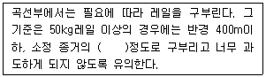
- 1/3
- 1/2
- 2/3
- 3/4
(정답률: 알수없음)
4. 레일끝처짐ㆍ끝닳음의 도상다지기에 의한 정정작업에서 이음매부 첫 째 침목을 제1침목이라 할 때 레일 중간부 침목에 대한 제1침목의 다지기 타수 증대 비율(%)로 옳은 것은?
- 110%
- 120%
- 130%
- 150%
(정답률: 알수없음)
5. 콩자갈 채우기 작업은 자갈도상으로서 깬자갈, 친자갈, 또는 막자갈을 사용하는 선로에서 정정량이 얼마 이하일 때 시행하는가?
- 10mm
- 15mm
- 10cm
- 15cm
(정답률: 알수없음)
6. 레일앵카를 붙이는 방법에 대한 설명 중 틀린 것은?
- 집설식을 원칙으로 한다.
- 유간정리 직후에 부설한다.
- 보통 2인 또는 3인 협동으로 작업한다.
- 기온의 변화가 적은 때에 붙인다.
(정답률: 알수없음)
7. 도상다지기 작업(인력)시 다지기 순서는 특별한 때를 제외하고는 몇 자형 다지기를 원칙으로 하는가?
- 4자형
- 6자형
- 8자형
- 10자형
(정답률: 알수없음)
8. 도상자갈치기(인력)의 작업상 주의사항으로 옳지 않은 것은?
- 혹서기를 피한다.
- 도상보충의 시기를 감안한다.
- 되도록 잡초 번성기 전에 시행한다.
- 도상자갈이 충분한 습기를 갖고 있을 때를 택한다.
(정답률: 알수없음)
9. 인력에 의한 보통침목 교환작업에 대한 설명으로 옳지 않은 것은?
- 도상자갈 긁어내기는 좌우로 한사람씩 나누어 시행한다.
- 스파이크 등 체결장치 해체는 한사람이 맡는다.
- 바닥자갈 고르기는 신침목의 삽입을 용이하게 하는 정도로 한다.
- 신침목의 삽입시 수심부는 위로, 표피부는 밑으로 가도록 한다.
(정답률: 알수없음)
10. 유간정리 중 상례보수 작업으로 맹유간 또는 과대유간을 정리하는 정도의 경우로서 수시로 시행하는 것은?
- 간이정리
- 소정리
- 중정리
- 대정리
(정답률: 알수없음)
11. 인력 줄맞춤 정정 작업에서 기준 말뚝의 높이는 침목 표면 보다 몇 cm정도 높게 하는 것을 원칙으로 하는가?
- 5cm
- 9cm
- 12cm
- 16cm
(정답률: 알수없음)
12. 1종 기계작업시 작업 중 또는 대기 중인 장비간 거리의 기준으로 옳은 것은?
- 5m 이상
- 10m 이상
- 20m 이상
- 25m 이상
(정답률: 알수없음)
13. 인력으로 분기기 전체를 교환하는 방법으로 옳지 않은 것은?
- 밀어넣기 방법
- 들어놓기 방법
- 돌려놓기 방법
- 원 위치 조립부설 방법
(정답률: 알수없음)
14. 지하철의 열차 편성시 6량 편성(4M2T)의 표준은? (단, M: 동력을 가진 차, M‘; 동력 및 전원장치를 가진 차, Tc: 제어차(운전실을 가진 차))
- Tc-M-M-Tc-M’-M
- Tc-M-M’-M-M’-Tc
- Tc-M’-M-Tc-M’-M
- Tc-Tc-M-M-M-M’
(정답률: 알수없음)
15. 정거장 배선 계획시 고려해야 할 기본사항 중 맞지 않는 것은?
- 본선과 본선은 가급적 평면 교차되도록 할 것
- 정거장 구내의 투시가 양호하도록 할 것
- 분기기를 구내에 산재시키지 말고 가능하면 집중하여 배치할 것
- 반대방향의 열차가 서로 안전하게 착발하도록 할 것
(정답률: 알수없음)
16. 레일용접시 용접부 검사종목이 아닌 것은?
- 외관검사
- 침투탐상검사
- 경도시험
- 인장시험
(정답률: 알수없음)
17. 상치신호기의 세움에 대한 설명으로 옳은 것은?
- 신호기는 소속선의 오른쪽에 세워야 한다.
- 주신호기 및 유도신호기는 같은 신호기주에 각 4개 이상을 설치할 수 있다.
- 주신호기 또는 원방 신호기가 현시하는 신호를 열차에서 인식할 수 있는 거리는 100m정도이어야 한다.
- 같은 선에서 분기되는 2 이상의 진로에 대하여 같은 종류의 신호기는 같은 지점 또는 같은 신호기주에 설치해야 한다.
(정답률: 알수없음)
18. 궤도의 복진이 일어나는 개소에 대한 설명으로 옳지 않는 것은?
- 급한 하기울기
- 분기부와 곡선부
- 운전속도가 큰 선로구간
- 교량 전후의 궤도탄성 변화가 없는 곳
(정답률: 알수없음)
19. 낙석방지를 목적으로 설치하는 설비 또는 대책으로 옳지 않은 것은?
- 시멘트 모르타르에 이한 암석의 고정
- 낙석방지ㆍ옹벽 설치
- 낙석 덮개 설치
- 경계설비 설치
(정답률: 알수없음)
20. 기울기의 분류에서 열차운전 계획상 정거장 사이마다 조정된 기울기로서 역간에 임의 지점간의 거리 1km의 연장 중 가장 급한 기울기로 조정되는 것은?
- 최급기울기
- 제한기울기
- 타력기울기
- 표준기울기
(정답률: 알수없음)
2과목: 측량학
21. 레일을 전기적 구역으로 분할하기 위하여 이음매를 전기적으로 통하지 않도록 할 개소에 사용되는 이음매는?
- 본드 이음매
- 절연 이음매
- 이종 이음매
- 용접 이음매
(정답률: 알수없음)
22. 건널목이 있는 구간에 운행되는 열차의 최고속도가 108km/h이고, 경보시간을 30sec라 하면 제어구간 길이는?
- 324m
- 360m
- 540m
- 900m
(정답률: 알수없음)
23. 열차사고를 방지하기 위한 보안 장치의 종류가 아닌 것은?
- 신호장치
- 험프장치
- 연동장치
- 폐색장치
(정답률: 알수없음)
24. 차량이 대향분기를 통과할 때 크로싱의 결선부에서 차륜의 플랜지가 다른 방향으로 진입하는 것을 방지하기 위하여 반대측 주레일에 부설하는 것은?
- 텅레일
- 리드레일
- 주레일
- 가드레일
(정답률: 알수없음)
25. 궤도클림의 종류가 아닌 것은?
- 궤간트림
- 수평틀림
- 면틀림
- 침목틀림
(정답률: 알수없음)
26. 도상 횡방향 저항력에 영향을 미치는 사항이 아닌 것은?
- 침목의 중량
- 침목배치 간격
- 레일의 형상
- 도상의 입도
(정답률: 알수없음)
27. 각도와 거리를 동시에 관측할 수 있는 장비로, 기계 내부의 프로그램에 의해 자동적으로 수평거리 및 연직 거리가 계산되어 디지털(digital)로 표시되는 장비는?
- 토털 스테이션
- GPS
- 데오드라이트
- 위성 거리 측량기
(정답률: 알수없음)
28. 다음은 A, B 두 지점의 거리를 관측한 결과이다. 이 측정 결과를 가지고 구한 최확값은?
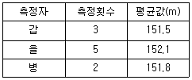
- 151.76m
- 151.80m
- 151.86m
- 152.10m
(정답률: 알수없음)
29. 레벨을 사용하여 두 점간의 고저차를 구하는 측량은?
- 삼변측량
- 직접수준측량
- 스타디아 측량
- 삼각측량
(정답률: 알수없음)
30. 그림과 같이 경사가 일정한 경사면의
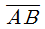
거리가 120m일 때 이 경사거리에 대한 수평거리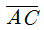
의 거리는?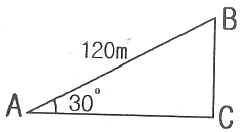
- 103.923m
- 60.000m
- 51.962m
- 48.627m
(정답률: 알수없음)
31. 삼각측량의 특징에 대한 설명으로 옳지 않은 것은?
- 삼각측량은 넓은 면적의 측량에 적합하다.
- 삼각점은 시통이 잘되고 전망이 좋은 곳에 설치한다.
- 조건식이 많아 계산 및 조정 방법이 복잡하다.
- 각 단계에서 정확도를 점검할 수 없다.
(정답률: 알수없음)
32. 두 점간의 좌표차에 있어 △X(N)=-45m, △Y(E)=45m일 떄 방위각은?
- 45°
- 135°
- 225°
- 315°
(정답률: 알수없음)
33. 평판측량의 특징에 대한 설명으로 옳지 않은 것은?
- 기계의 조작과 측량방법이 간단하다.
- 야장이 필요 없다.
- 기후의 영향을 받지 않는다.
- 외업에 많은 시간이 소요된다.
(정답률: 알수없음)
34. 관측자의 미숙과 부주의에 의해 발생되는 오차는?
- 착오
- 정오차
- 부정오차
- 우연오차
(정답률: 알수없음)
35. 다음 그림은 삼각측량 결과이다. BA측선의 방위각은?
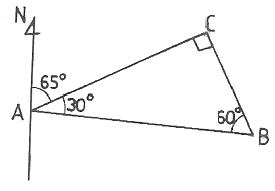
- 95°
- 135°
- 245°
- 275°
(정답률: 알수없음)
36. 폐합 트래버스 측량에 대한 설명으로 맞는 것은?
- 임의 기준점의 좌료를 결정하기 위하여 좌표를 알고 있는 한 기지점에서 출발하여 다른 기지점에 결합시키는 트래버스 측량이다.
- 기지점의 관계위치가 측량결과를 점검하기 위한 조건이 되기 때문에 측량결과의 오차점검이 가능하여 정확도가 높다.
- 대규모 지역의 정확도 높은 측량에 사용한다.
- 시점과 종점이 일치하여 모양이 폐합된 다각형을 이루는 트래버스 측량을 말한다.
(정답률: 알수없음)
37. 탈선방지 가드레일의 후렌지웨이는 그 양단의 최소 몇 m 이상의 길이를 깔대기형으로 구부려야 하는가?
- 2m
- 4m
- 5m
- 7m
(정답률: 알수없음)
38. 열차의 안전운행을 위하여 탈선포인트를 설치하여야 하는 경우는?
- 단선구간의 정거장에 있어서 상ㆍ하행 열차를 동시에 진입시킬 때 긴 하구배로부터 진입하는 본선로의 선단에 안전측선의 설비가 없을 때
- 여러 개의 분기기가 설치된 차량기지의 시점
- 복선구간의 정거장에 있어서 상ㆍ하행 열차를 동시에 진입시킬 때
- 정거장에 있어서 본선로가 다른 본선로와 입체 교차할 때
(정답률: 알수없음)
39. 건너패킹의 치수로 옳은 것은?
- 두께: 50mm 이하
- 폭: 240mm
- 길이: 450mm 이상
- 두께: 10mm 이상
(정답률: 알수없음)
40. 고속철도 구조물 중 1종 시설물만으로 짝지어진 것은?
- 정거장, 옹벽
- 정거장, 터널
- 터널, 교량
- 옹벽, 교량
(정답률: 알수없음)
3과목: 선로보수
41. 정거장외의 구간에서 2개의 선로를 나란히 설치하는 경우에 설계속도 150km/h 이하일 때의 궤도중심간격은 최소 몇 m 이상으로 하여야 하는가?
- 4.0
- 4.3
- 4.8
- 5.0
(정답률: 알수없음)
42. 곡선 반지름 R=300m 곡선 중의 궤간으로 적당한 것은? (단, 슬랙 조정치 S’=0으로 한다.)
- 1435mm
- 1439mm
- 1443mm
- 1447mm
(정답률: 알수없음)
43. 선로구조물 중 교량대피소는 몇 m 전후의 교각상에 설치하는 것을 원칙으로 하는가?
- 20m
- 30m
- 40m
- 50m
(정답률: 알수없음)
44. 장대레일의 궤도구조가 구비하여야 할 조건 중 침목은 원칙적으로 몇 kgf/m 이상의 도상횡저항력이 되도록 침목을 배치하여야 하는가?
- 300kgf/m
- 500kgf/m
- 600kgf/m
- 1000kgf/m
(정답률: 알수없음)
45. 궤도틀림지수 계산에서 틀림의 평균값 계산식으로 옳은 것은? (단, m:틀림의 평균값, n:측정수, fx: 틀림량)
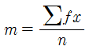
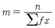
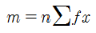
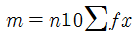
(정답률: 알수없음)
46. 궤도재료 점검의 종류가 아닌 것은?
- 레일 점검
- 분기기 점검
- 도상 점검
- 노반 점검
(정답률: 알수없음)
47. 도상보수시 레일면에 높고 낮음이 생겼을 때 도상으로 정정할 수 없는 경우 레일과 침목사이 또는 구조물과 침목사이에 무엇을 삽입하여 정정하여야 하는가?
- 패킹
- 신축판
- 콩자갈 채우기
- 이음매판
(정답률: 알수없음)
48. 고속철도 궤도재료점검 중 레일체결장치점검의 주기는?
- 2개월에 1회 이상
- 분기(3개월)에 1회 이상
- 반기(6개월)에 1회 이상
- 년 1회 이상
(정답률: 알수없음)
49. 레일을 교환하여야 하는 레일 두부의 최대 마모높이(마모면에 직각으로 측정)로 잘못 짝지어진 것은?
- 60kg : 13mm
- 50kg N : 15mm
- 50kg ASCE : 7mm
- 50kg ARA-A : 9mm
(정답률: 알수없음)
50. 선로구조물 점검 대상에 해당하지 않는 것은?
- 교량
- 방토설비
- 정차장설비(기기 제외)
- 역사건물
(정답률: 알수없음)
51. 고속철도 궤도보수점검의 종류가 아닌 것은?
- 궤도검측차점검
- 차량가속도측정점검
- 하절기점검
- 열차확인점검
(정답률: 알수없음)
52. 선로구조물의 구분에 있어서 지면으로부터 노출된 높이가 5m이상으로서 연장 100m 이상인 옹벽은 몇 종 시설물에 해당 되는가?
- 1종 시설물
- 2종 시설물
- 3종 시설물
- 기타 시설물
(정답률: 알수없음)
53. 목침목 부설시 주의사항 중 옳지 않은 것은?
- 둥그레한 것은 폭이 넓은 쪽을 레일과 밀착시킨다.
- 목침목은 수심쪽을 밑으로 가게 한다.
- 필요에 따라 레일 또는 타이 플레이트(tie plate)에 밀착이 잘되록 접착면을 깎아서 부설하여야 한다.
- 갈라질 우려가 있는 것은 필요한 조치를 하여야 한다.
(정답률: 알수없음)
54. 다음 중 레일 유간정리 작업의 방법이 아닌 것은?
- 간이정리
- 소정리
- 중정리
- 대정리
(정답률: 알수없음)
55. 궤도재료점검 중 다음과 같은 불량기준을 갖는 궤도재료는?
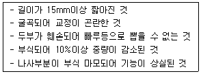
- 팬드롤 크립
- 이음매판볼트
- 스파이크
- 스프링크립
(정답률: 알수없음)
56. 곡선반경 400m인 곡선에 통과하는 열차속도가 20km/h일 때 설정캔트(cant)는? (단, 부족캔트 = 0mm)
- 5.9mm
- 11.8mm
- 59mm
- 118mm
(정답률: 알수없음)
57. 선로의 진동상태를 파악하기 위하여 열차에 승차하여 선로의 동적상태를 확인하는 순회를 무엇이라 하는가?
- 특별순회
- 도보순회
- 일상순회
- 열차순회
(정답률: 알수없음)
58. 곡선반경(R)=350m일 때 환산기울기(Gc: 천분율)는 얼마인가?
- 0.5
- 1.0
- 1.5
- 2.0
(정답률: 알수없음)
59. 고속철도 순회점검의 종류에 해당되지 않는 것은?
- 일상 순회점검
- 악천후시 점검
- 열차기관사나 승무원의 요구에 의한 점검
- 사고발생시 긴급점검
(정답률: 알수없음)
60. 도상자갈의 기본단면과 보수기준 중 본선의 레일을 높이거나 낮출 때의 도상높이기 또는 긁어내기에 대한 설명으로 옳지 않은 것은?
- 1회 시행할 수 있는 높이는 열차운전상태를 고려하여 정하되 특별한 경우를 제외하고는 50mm를 초과하지 못한다.
- 1회의 작업량은 열차운전 사이에 다지기 작업까지를 완료할 수 있는 범위로 정하고 좌우레일을 같이 시행하여야 한다.
- 도상높이기 또는 긁어내기를 연속적으로 시행할 때에는 몹시 더운 날을 피해야 한다.
- 작업중에 열차통과를 위한 레일면의 접속연장은 긁어내기 또는 높이기량의 100배 이상의 거리에서 접속시켜야 한다.
(정답률: 알수없음)